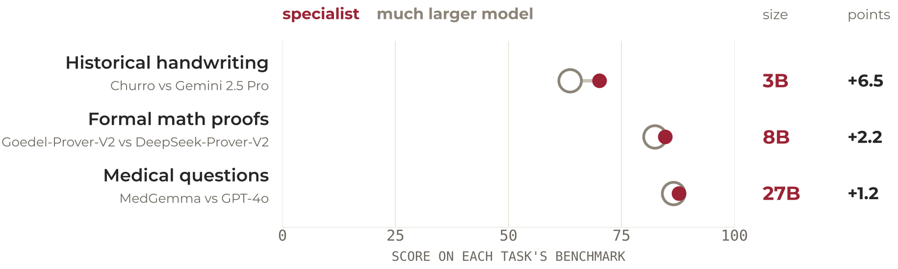
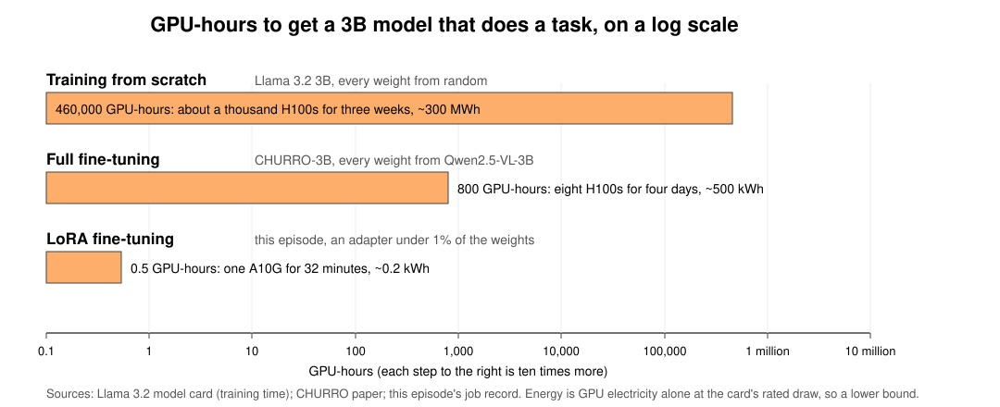

Fine-tuning with LoRA: Colab, CHTC, or AWS

In this exercise, you’ll use LoRA (low-rank adaptation) to fine-tune CHURRO-3B, a vision-language model for historical documents, on handwritten German letters from the Badger Scribe challenge. The letters use Kurrent, a historical script that’s difficult even for models that already recognize other kinds of handwriting.
The same exercise runs in three places: a free Google Colab notebook, UW-Madison’s CHTC, and AWS SageMaker. Start with the Colab notebook to learn the workflow, then see where to run it for the other two.
Why fine-tune, and why LoRA?
Training a model with billions of weights from scratch takes thousands of GPUs running for months. Pretrained models already know how to interpret images and language, and fine-tuning trains them a little further on examples from your own task, so a few hundred labeled pages do what millions would from scratch. Better prompting helps only so far: there are limits to what instructions can do when the model has never learned to recognize the writing itself.
CHURRO itself is an example. It is a 3-billion-parameter model that Stanford researchers fine-tuned from Qwen on roughly 100,000 historical document pages, and its authors report better transcription accuracy than Gemini 2.5 Pro at substantially lower inference cost (paper). The same pattern, a small specialist beating a much larger generalist on the task it was trained for, shows up in many places, including theorem proving and medical imaging.

Fine-tuning a model this way is limited by GPU memory. Full fine-tuning updates every weight, and training needs far more memory than running a model does: the weight, its gradient, a 32-bit master copy, and two optimizer averages, about 16 bytes per parameter. For CHURRO’s 3.75 billion parameters that is about 60 GB before activations and other overhead: more than any 24 GB card, so the lesson sizes it as a four-GPU instance on AWS, and on CHTC it needs one of the 80 GB or larger cards.
LoRA leaves the pretrained weights frozen, at 2 bytes each with nothing else to store, and trains two thin matrices beside selected layers, under one percent of the model. The output is an adapter of about 100 MB that you save separately and load on top of the base model. QLoRA is LoRA with the frozen weights stored in 4-bit, which is how this run fits a free 16 GB T4.

| How CHURRO’s 3.75B parameters are used | Bytes per parameter | GPU memory with activations | Fits a 16 GB T4? |
|---|---|---|---|
| Full fine-tune, every weight updated | 16 | about 60 GB | No |
| LoRA, weights frozen in 16-bit | 2, plus the adapter | about 12 GB | Only just |
| QLoRA, weights frozen in 4-bit | 0.5, plus the adapter | about 6 GB | Yes, with room |
This is what makes LoRA practical for research groups: take an open-weight model, adapt it to your own data, measure whether it helped, and keep the adapter, all on a single GPU. On campus that means a fine-tune that fits one CHTC GPU, or, as here, a free Colab T4.
What you’ll do
The data is 295 labeled pages from the Anna Seifert correspondence, letters written in Kurrent between 1932 and 1942 and transcribed by the Max Kade Institute. All three versions run the same training script with the same settings: 15% of the pages held out with a fixed seed, a LoRA adapter of rank 16, two passes over the remaining 251 pages, and a checkpoint at the end of each pass. Whichever version you run, the job:
- Scores the base model on 15 held-out pages using character error rate (CER), the competition’s own metric.
- Trains the adapter for two epochs, scoring 8 of the held-out pages after each pass to build a learning curve.
- Scores the fine-tuned model on the same 15 pages and saves the adapter, about 100 MB, along with the per-page scores, the loss and CER curves, and a summary.
Reading the results is also the same everywhere. The before-and-after CER on the same held-out pages isolates the effect of the fine-tune, and the held-out CER curve, not the training loss, is what tells you whether more passes would have helped. Optionally, the adapter can transcribe the 141 unlabeled test pages with the lesson’s batch transcriber.
What differs is the work around the script. In Colab you install three libraries, count tokens per page and adapter parameters by hand, and run a 20-page test before the full run. On CHTC you build a container, stage the model weights, and describe the job in an HTCondor submit file. On SageMaker you estimate the cost, launch a training job, tag it, and check the billable time afterward.
Choose where to run it
| Google Colab | CHTC | AWS SageMaker | |
|---|---|---|---|
| How it runs | Interactive notebook | HTCondor batch job; guide in development | Managed training job |
| Access | Google account | UW-Madison researchers and students, with a faculty sponsor | AWS account with payment method or credits |
| GPU used in the exercise | T4, 16 GB; 4-bit base model | Campus GPUs, including L40S, A100, H100 and H200 | A10G, 24 GB |
| Estimated run time | ~1.5 hours, subject to GPU availability | ~20 minutes after queue wait | ~33 minutes |
| Compute charge for this run | Free tier | Free | ~$0.75 at the documented rate |
| Additional skills | Making a model fit in limited GPU memory | Submitting jobs, staging data and working with containers | Estimating costs, tagging jobs and checking billable time |
Colab is the easiest way to follow along without setting up research computing access, and it is a place to learn fine-tuning, not to do it for a project. The free tier hands out a GPU only when one is available, ends a session after a few hours of use or 90 minutes idle, and throttles accounts after heavy days. That is fine for this exercise, but a research project needs runs that repeat, data that grows, and results that are reproducible months later, and Colab offers none of that reliably. The notebook saves checkpoints to Google Drive so a dropped session costs one epoch rather than the whole run; a dataset ten times larger would outrun the session before the first checkpoint. Take what the notebook teaches to CHTC, or to the cloud when CHTC cannot do the job.
CHTC is where a UW-Madison research fine-tune should go first: it is free, its GPUs are large, and the only price is time in the queue. The work has to be packaged as a batch job rather than run interactively. The CHTC guide is still in development and has not yet been tested end to end. If you try it, please report problems and include the job’s .log and .err files.
SageMaker is useful when you want to learn managed cloud training or need AWS resources for a research project. The episode is written for someone working through the workshop: it assumes the bucket, controller notebook and IAM role from episodes 1 to 4, and data already staged in S3, so it is not a cold start the way the Colab notebook is. Unlike Colab or CHTC, its compute is billed while the job runs, so the fine-tuning episode launches the job from a small controller notebook, estimates and caps its cost, tags it, and compares the estimate with the billable time afterward. For institutional research, see UW Cloud Services for UW-provisioned accounts.
The National Research Platform (NRP) is another GPU option for UW-Madison researchers, with notebook-based access. There isn’t a separate NRP version of this exercise yet.
Prerequisites
Whichever version you run, you should be comfortable with basic Python and with the ideas behind model training and evaluation:
- Workshop: Intro to Machine Learning
- Workshop: Basic Python Programming
- Recommended: Notebook: Understanding Quantization and Precision, for the 4-bit model loading the Colab version uses
Each platform also has its own access requirements:
- Colab: a Google account, for Colab and for Google Drive, where checkpoints are saved.
- CHTC: a CHTC account, which needs a NetID and a faculty sponsor, plus GPU Lab access and a
/stagingdirectory (ask for both when you request the account). You’ll work from the command line over SSH, on the campus network or VPN. - AWS SageMaker: the episode assumes the lesson’s own setup. Episodes 1 to 4 of the Intro to AWS for ML/AI workshop create the S3 bucket and the small CPU notebook instance that launches the job, and the job runs as the lesson’s
ml-sagemaker-useIAM role. In the workshop’s shared UW-Madison account the instructors stage the Badger Scribe data and the CHURRO-3B weights in S3 and have the GPU quota in place. On an account of your own, you do that yourself: a paid-plan account, a GPU quota request filed three to four weeks ahead, the IAM role, and the data and model staged in your bucket. The lesson’s setup page has the steps.
Estimated time to complete
- Colab: 2–3 hours, including roughly 1.5 hours of GPU work once a GPU is available.
- CHTC: a few days of calendar time for the account, an afternoon for the first container build and model staging, then about 20 minutes of GPU time per run plus its wait in the queue.
- AWS SageMaker: the training job runs about 33 minutes; allow an hour with launch and reading the bill, on top of the workshop’s setup episodes. On an account of your own, GPU quota approval can take weeks.
Comments